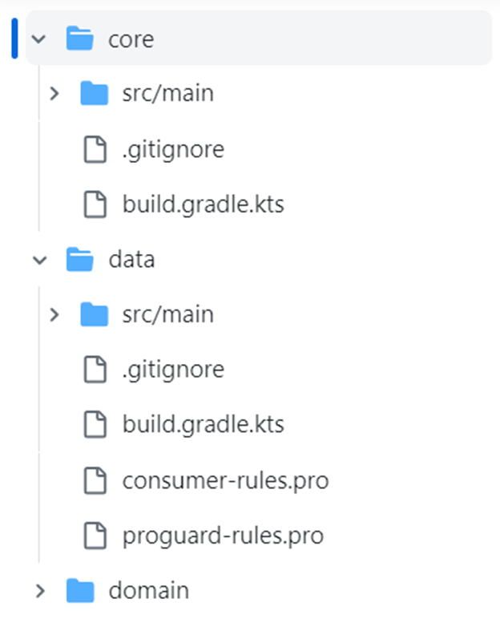

App-Report
Daniel Fernando Gómez-Barrera
Daniel Andrés Bernal Cáceres
Part 1
Describe the app you chose thoroughly. What is/are its core functionalities? What do you think is their revenue model? How many downloads does it have? What do you find interesting about it?
Core Functionalities
Tachayomi is a highly customizable manga reader. To find the application's main functionalities, we downloaded it from UpToDown app store (https://tachiyomi.en.uptodown.com/android/download). Currently it is not available in the official android store (Google Play). We navigated for the different views of the application, and extensively reviewed the User Guide (available at https://tachiyomi.org/).
The core functionalities are the following (this are explicitly publicized in the front page):
Extensions: To use this feature, we accessed to the browsing option in tab bar where the user can access to the different sources of manga (Figure 1.a). In the contextual menu there is an option called “Extensions”, in this section there are different providers of manga.
We tested with some of them, in order to install these extensions Tachayomi installs another app in the device per extension (to get it work we need to give installing permissions to Tachayomi, which bring us security concerns). After installing it, the extension library could be accessed through the source view (as shown in Figure 1.b). When an extension source is selected the app opens the extension library with all the manga available for this extension (Figure 1.c).
Tracking: Tachiyomi allows integration with supported trackers. Such as MyAnimeList, Anilist, MangaUpdates and others. These trackers allow the user to follow the progress of the reading, set time goals of finishing, show reviews, etc. For configuring a tracker, we followed the instructions of the user guide. To test the functionality, we created a user in Anilist, and linked it in Tachiyomi (Figure 2.a, 2.b). In each manga it is needed to select the tracker and relate the manga with one in the Anilist database. After that automatically after reading a chapter Tachiyomi updates the progress in Anilist (Figure 2.d).

Fig 2. d) Anilist webapp (shows tracking of manga in Tachiyomi)
Customization: Probably this is the most interesting feature: Tachiyomi is highly configurable for reading. When reading a manga Tachiyomi show a tab bar with four buttons, the first is to change the change of page gesture (left to right, vertical, etc), the second is to crop the image (usually manga have big margins in blank, so Tachiyomi cropped it to show only filled content), rotation mode (free, fixed portait, fixed land scaped) and the last button is for another configurations.
As shown in Figure 2.b and 3.c Tachiyomi allows the user from changing behavior when tapping, to adjusting color filters for an enhanced reading experience. Although there are many possible choices, the most common preferences, also available in other readers, were directly accessible from the tab bar making it simple for the reader not interested in setting many options.
Other functionalities (not core):
- Source migration: Time to time sources become no longer accessible. In order to no lose any progress Tachiyomi allows the user to migrate the preferences and progress to another source that had the same manga.
- Backups: When changing devices or to prevent loss of information Tachiyomi has a backup feature, that let the user recover titles, categories, read chapters, tracking settings, reading history and manga information in case of failing.
- Categories: To organize the different manga stored in Tachiyomi, the user can create categories and classify his manga according to his preferences.
- Dark mode: Tachiyomi supports night/dark mode, the device in which we tested the different functionalities was configured in dark mode. Tachiyomi get automatically this setting of the system and set the app in dark mode. In the Figures 1, 2 and 3 is shown how the dark mode displays on the device.
Revenue model
Tachiyomi is an open-source manga application, and so, it does not have traditional revenue model like the commercial applications. Instead, Tachiyomi is maintained by volunteers and available to user for free.
Taking into account Tachiyomi's lack of a revenue model, it relies on donations and contributions from its user community to cover for hosting costs, support ongoing development and ensure the availability of manga sources.
Downloads and Store Availability
As said before Tachiyomi is not available in the official app stores for most of the Android devices: Google Play, Huawei App Gallery, and other device-integrated stores. Nevertheless, Tachiyomi is offered in UpToDown (Figure 4). This app store is completely open and does not have any location restrictions nor subscription costs for uploading apps. At this app store there have been reported more than 2.7 million downloads for Tachiyomi. However, Tachiyomi allows downloads of their APK directly from the official webpage, so the number of total downloads is probably much higher than 2.7 million.
Interesting Facts
Tachiyomi is completely open-source and community made, everyone can make a pull request to modify the source code. Originally was created by developers in their “free time”.
Using this application, we were amazed of the nice UX. Very usable, following the modern android guidelines and using the latest version (introduced with Android 12) of Google's open source designing library: Material 3.
Stated in their webpage the do not have interest to be in Google Play Store nor extend availability for iOS devices.
One of the main reasons to use Tachiyomi: is a free-ad application. That may seem normal due to the type of app (free, open source, etc.), but the amazing fact is the sources available in Tachiyomi have ads. If you go directly through their pages, you can read the manga but with many ads included. One of the main objectives of the developers were avoid this, so the extensions extract the manga without the publicity.
When users download the app, it requests certain permissions, including access to photos, media, and files stored on the device. Additionally, the app asks for permission to install unknown apps, particularly for the various extensions the app utilizes.
Describe the repo of the app. In this description you should at least describe: What languages do they use? How many commits does it have? How many lines of code? Think about forks, branches, etc. Think about each important component of the repository and describe it
Browsing the GitHub repository that was publicly shared by the development team on the official website (https://github.com/tachiyomiorg/tachiyomi/tree/master), we can access pertinent information about the entire app for analysis.
In alignment with Figure 7, the developers have indicated that the most recent stable release of the application is version 0.14.6. Remarkably, this release marks the 75th iteration and was published on April 16, 2023. It's noteworthy that this version is designed to be compatible with Android devices running Android 6.0 (Marshmallow) or higher.
Languages of use
With a remarkable 100% utilization of Kotlin, it's evident that Kotlin is the exclusive and predominant programming language used for developing the Android app in Tachiyomi.

Figure 8. Tachiyomi’s programming languages for the Android app
While Kotlin plays a central role in the development of the Android application, it's essential to acknowledge the use of other programming languages within the broader project scope. These languages come into play for various purposes, including website development, image decoding processes, and the extraction of information from Tachiyomi's extensions.
Commits
As of the date of this report, the repository boasts an impressive tally of 6,035 commits exclusively within the main branch, which is the only branch observable. Furthermore, the last stable release showed 16 commits, involving modifications to 24 files, and contributions from 3 distinct collaborators. Please refer to Figure 7 for more details about the release.
Lines of Code
The total number of lines of code was obtained through 2 methods. The first one was using a Google Chrome extension called GithubGloc, this extension allows anyone to see the estimated amount of code in the whole repository. For Tachiyomi, GithubGloc found an approximate of 161,000 lines of code.
The second method was able to calculate a more precise number of the total lines. Using the git command git ls-files | xargs wc –l in the Git Bash of a fork of the repository, the terminal showed three subtotals that sum up to the total number of 163,589 lines of code, which is close to the estimation computed by the GithubGloc extension.


{kind=link}
{kind=link}
{kind=link}
{kind=link}
Important Components
It's worth noting that the Tachiyomi repository has garnered significant community involvement, with nearly 600 contributors actively participating in the development and collaboration on the platform.
Regarding language availability, the development team has undertaken the ambitious task of translating the app into 80 languages. Impressively, they have achieved 73% of this extensive translation goal.
Furthermore, Tachiyomi boasts over 24,000 stars, indicative of its popularity among users and developers alike. Additionally, more than 2,600 individuals have forked the code to work on their own variations or contribute to the project.
The app's inception traces back to its first official stable release on January 16, 2016, with version 0.1.0. Since then, it has seen a total of 75 official releases. To enhance user engagement and testing of new features, developers also provide a "preview version" for users to explore ahead of the next stable release.
Identify in this app at least 2 business questions type 2, and 1 business questions type 4 or 5.
Busisness Questions Type 2
Question 1: Which mangas has the user recently viewed?
arrow_right_alt Description of a possible data source: Tachiyomi utilizes the "history.sq" data source to meticulously track user manga views. This history repository meticulously records vital information, including the manga's unique identifier, the date of access, and the time spent by the user on manga reading sessions. Subsequently, developers harness the date information to seamlessly arrange the user's reading history in a chronologically descending order, from the most recent manga read to the oldest.
arrow_right_alt Describe/Show how the data is displayed: Tachiyomi presents this information within the "History" section, accessible via a navigation bar button. Within this section, the app displays the manga titles that the user has read with their cover image, the current chapter, and the timestamp of the last reading. Furthermore, users have the option to clear all their reading history with a single button press or to delete one specific. It's worth mentioning that the app arranges the manga entries in chronological descending order, creating a dedicated space for users to easily locate their recently viewed mangas.
Question 2: What are the various reading modes available to users when reading manga?
arrow_right_alt Description of a possible data source: Tachiyomi utilizes the Android's SharedPreferences system which stores the app-specific user preferences and settings. This works the following way:
- Everytime the user opens Tachiyomi the app initializes SharedPreferences to manage the settings.
- Users acces the settings screen or menu, when in this scenario selects one particular reading mode.
- When this happens, the app updates the corresponding SharedPreferences key-value pair to reflect the new value.
- Whenever the app needs to use a user's preference, it retrieves the value from the SharedPreferences.
It's worth mentioning that SharedPreferences allows the developers to define a default value if a user has never manually configured a particular setting. Additionally, these SharedPreferences are designed to persist between app sessions, meaning that the user preferences will stay intact even if the user closes the app.
arrow_right_alt Describe/Show how the data is displayed: The data is an enumeration with various possible values, depending on the user's preferences. This enumeration is displayed in different screens and sections of the app.
- In the manga reading screen, the buttons below provide the user with different options to customize their reading mode. If the user taps the bottom-left button, the app displays the enumeration for the user.
- In the manga reading screen, the buttons below offer the user various ways to customize their reading mode. If the user taps the bottom-right button, the settings will appear, and they can navigate to the "Reading mode" section to make modifications.
- Alternatively, users can access the settings by tapping the settings button in the main menu, then navigating to the Reader section and selecting the "Default reading mode" option.
Busisness Questions Type 5
Question 1: What are the most used extensions of the marketplace?
arrow_right_alt Description of a possible data source:
Tachiyomi makes use of the "sources.sq" data source to store downloaded manga extensions that each user has obtained. Given this, developers just need to merge all the tables, aggregating the count of each manga extension, and subsequently sorting the results in descending order of
frequency. It’s worth noting that merely by modifying the sorting criteria, developers could also know the least used extensions.
Furthermore, within the "manga.sq" data source, there exists a timestamp for the duration a user spent reading manga from each extension. By employing appropriate joins, developers can construct a query that considers the reading time allocated by each user for every extension, thereby approaching a more accurate result for the following question.
arrow_right_alt Benefits for the Business/App:
This question holds significant value for the Tachiyomi app, primarily due to its community-driven model. In Tachiyomi, several extensions are either maintained or financially supported by the community.
By analyzing each extension usage data, the developers can make informed decisions regarding extensions that receive little to no utilization. This data-driven approach enables them to optimize their efforts and resources by focusing on more commonly used sources.
Furthermore, if the least-used extensions involve financial costs, identifying and discontinuing them can result in cost savings for the developers. Therefore, this analysis not only streamlines the user experience but also ensures the efficient allocation of resources within the app's ecosystem.
Furthermore, developers have the opportunity to enhance the "sources" and "extensions" views. They can implement features that recommend the most popular extensions, making it easier for users to discover and utilize them. Simultaneously, efforts can be directed towards increasing the visibility of lesser-used extensions, aiding their recognition and potentially encouraging more users to explore and benefit from them.
Busisness Questions Type 4
Question 1: What have been the 10 most popular manga in the last year?
arrow_right_alt Description of a possible data source: Tachiyomi can effectively utilize the "mangas.sq" data source to address this inquiry. By performing comprehensive table joins and analyzing user engagement metrics, such as the most frequently viewed and time-spent manga, valuable insights can be extracted. This data not only holds significant relevance for various companies but is also invaluable for Tachiyomi itself.
arrow_right_alt Benefits for the Business/App: TThe data related to the 10 most popular manga can be a profit source for the Tachiyomi revenue model, since it can be sold to manga editorials located in various countries nowadays.
Relevant Links
Part 2
Use your knowledge in design patterns and architecture patterns to analyze the ones used in the app. You must include snippets of code that proves what you are saying.
Architecture
Factory Method
As a brief context, the intent of the Factory Method design pattern is to define an interface for creating an object and let subclasses decide which class it is going to be instantiated. The Application class can't predict the characteristics of the object to instantiate, it only knows when a new object should be created (Gamma et al., 1995).
{kind=link}
Product defines the interface of objects the factory method creates. ConcreteProduct oversees the implementation of the Product interface. Creator is the one that declares the factory method, which returns an object of type Product. The Creator class can also define a default implementation of the factory method that returns a default ConcreteProduct object (Gamma et al., 1995).
In Tachiyomi, we can notice the implementation of the factory method pattern by seeing how Manga and MangaCover objects are created in the main App class Kotlin file, especifically in lines 138, 147,148 and 152.
{kind=link}
When we go to the MangaCoverFetcher file, we can see that it is the class file in which the classes MangaFactory and MangaCoverFactory (while implementing a Fetcher interface) define and create the Manga and MangaCover objects. The characteristics of both classes are expressed in each of the constructors.
{kind=link}
{kind=link}
Data Mapper
According to Fowler & Rice (2003), in the Data Mapper pattern, the general procedure is to put a layer of “Mappers” that move data between objects of the application domain and the database while keeping them independent of each other and the mapper itself.
The Data Mapper layer separates the in-memory objects from the database; hence its responsibility is to transfer data between them and isolate them from each other. Because of this, the in-memory objects don’t need a SQL interface code nor knowledge of the database schema, in fact, the Data Mapper layer itself is even unknown to the domain layer.
{kind=link}
Figure 5. Example of Data Mapper architectural pattern (Fowler & Rice, 2003)
It is possible to see the implementation of this pattern when we take a closer look at how data-related classes are built. Each one of the classes that are defined in the “data” directory has its own Mapper.
{kind=link}
Taking the ChapterMapper file as an example we can detail how the code is transforming information from the database into objects of the Chapter class (which is an abstract representation of a manga chapter). The function chapterMapper gets all the information of a “chapter” as parameters and constructs a Chapter object that is going to be returned.
{kind=link}
In the same “data” directory, we can also see the AndroidDatabaseHandler file, which appears to be responsible for obtaining the information from the database through queries and defining how these mappings are done within the logic of the application.
{kind=link}
MVC (Model-View-Presenter)
In the MVC pattern, responsibilities are separated across three components of the system: the model, the view and the presenter. The model is responsible for implementing business logic, business behaviors and state management. In the second place, the view is responsible for rendering the UI elements of the app/system. Finally, the presenter is the one that interacts with the view and model, separating them from each other (Baeldung, 2022).
The presenter triggers the business logic and enables the view to update. It also receives data that is sent from the model and shows it through the view. In this way, testing the correct functioning of the presenter is much easier.
{kind=link}
We can see the implementation of this pattern in the Tachiyomi app by seeing the “presentation” directory. As its name says, this directory contains the classes of the app that work as presenters. Taking the example of showing the manga library to the user, we’ll detail the LibraryList class file. First, some components of the UI (i.e., the view) are imported:
{kind=link}
Some components of the model are also imported, these are the LibraryManga and MangaCover classes:
{kind=link}
Finally, we can see how, by getting the list of mangas from the model using a query, the presenter uses elements of the view to subsequently show the information to the user.
{kind=link}
This is not the only example that is present in the app, in fact, the presentation directory implements these characteristics for other elements of the logic, like the history, the manga categories or some of the manga's information.
Use your knowledge in UI/UX to describe and analyze the design of your app. Describe all the basic components of the UI/UX of the selected app (color, fonts, design metaphor, etc.), answer the following questions: what do you think can be improved? What did you like? For the groups of 3, analyze in detail at least 3 views.
Design System
A design system serves as the foundation for achieving consistency, user-friendliness, and aesthetic excellence in products. It encompasses a wide range of principles, resources, and elements, which aid design and development teams in preserving brand unity and simplifying the product creation process.
Visual Identity
Color Palette: Tachiyomi's color palette is a blend of three distinct colors: Tang blue, Office green, and Raisin black. Tang blue adds a sense of vibrancy and energy, creating an engaging and dynamic visual experience. Office green brings a touch of freshness and harmony, making the app feel welcoming and balanced. Raising black provides a solid and sophisticated foundation, adding depth and contrast to the overall design. Together, these colors contribute to Tachiyomi's unique and visually appealing user interface, enhancing the reading experience for manga enthusiasts.
{kind=link}
{kind=link}
{kind=link}
Typography:
- Heebo is a sans-serif font with a clean and contemporary design. Its legibility and versatility make it an excellent choice for digital interfaces, including apps like Tachiyomi. Heebo's balanced proportions and rounded letterforms contribute to a pleasant and accessible reading experience.
- Tachiyomi with Heebo Font: When Tachiyomi is configured to use the Heebo font, it brings a polished and streamlined look to the app. The text in manga titles, descriptions, and navigation elements becomes more readable and aesthetically pleasing. Heebo's crisp and well-defined characters ensure that readers can enjoy their favorite manga titles with clarity and comfort.
{kind=link}
Design Metaphor:
- Navigation Structure: Tachiyomi employs tabs to categorize various app sections, such as "Browse," "Library," and "Downloads." These tabs function similarly to pages in a book, aiding users in moving through the app's content seamlessly
- Reading Reminders: Users can place bookmarks in Tachiyomi to mark specific chapters or pages within a manga. This feature acts as a digital equivalent of inserting a physical bookmark in a book to remember where the reader left off.
- Visual Selection: While exploring manga titles in Tachiyomi, users often encounter cover art for each series. This mimics the role of a physical book cover, assisting users in assessing content and making choices based on visual appeal.
Views Analysis:
Tachiyomi's "History", “Browse” and “Settings” views are designed with a clean and minimalistic layout, which is a hallmark of its user interface. This design approach prioritizes simplicity and organization, ensuring that users can easily access and navigate their reading history without distractions or navigate through the different options of the UI in a simple way.
Users often have the flexibility to choose between a list view and a grid view. This feature caters to different user preferences, allowing them to select the visual layout that suits them best.
Each entry typically displays essential information such as the chapter number, the title and incorporates timestamps into each entry. This presentation allows users to quickly identify which chapters they have read and which ones they may want to revisit.
The app employs a high-contrast color scheme, enhancing readability and ensuring that users can enjoy their manga reading experience without visual strain.
Tachiyomi stands out not only for its extensive library and user customization but also for its thoughtful use of icons. These visual cues play a pivotal role in guiding users through the app's multifaceted features and functions.
Things to Improve:
- Onboarding Experience: Improving the initial onboarding experience for new users could help them understand the app's features and functionalities more easily. This could include interactive tutorials or tooltips to guide users through the app's core functions.
- Enhanced Search: The search feature is crucial for users to discover new manga. Enhancements in search functionality, such as filters, sorting options, and advanced search criteria, could make it easier for users to find specific manga titles or genres.
- User Feedback Integration: Streamlining the process for users to provide feedback or report issues directly within the app can help the development team address bugs and gather valuable insights for future improvements.
- Personalized Recommendations: Implementing a recommendation system based on a user's reading history and preferences can help users discover new manga titles that align with their interests.
What we like:
- Customizability: Tachiyomi allows users to customize the reading experience to their preferences. This includes customizable themes, reading direction, and various view options, making it easier for users to read manga comfortably.
- User-Friendly Interface: Tachiyomi's interface is intuitive and easy to navigate, making it convenient for users to discover, manage, and organize their manga collections. The app's user-friendly design enhances the overall reading experience and enables users to access their favorite manga titles quickly.
- Library Support: Tachiyomi supports multiple manga sources, allowing users to access a vast collection of manga from various online repositories. This extensive library support ensures that users can find and read a diverse range of manga titles within the app.
Based on your analysis, what quality attributes is your app managing? How are they doing it? For the groups of 3, describe at least 3 quality attributes.
Maintainability
Tachiyomi is a highly maintainable app. This allows Tachiyomi to be a community app where literally everyone can apport. There are three main factors in the development that are responsible for this quality attribute:
- Modular Design: Tachiyomi modularity makes adding new features easy and allows fixing bugs without affecting the rest of the app. In the repository, it’s clear which are these compile-independent modules.
Each main folder (first level in the hierarchy) contains a module. That’s why is a build.gradle file in each main folder allowing independent compilation.
Figure 17. Directories of the repository
- Extensive documentation: The extensive documentation makes it easy for new developers to contribute to the project and for existing developers to maintain the code.
In the repository documentation, they are very clear in the process of contributing to the repository. The developers must follow strict guidelines and follow several steps for community verification of the new code. For example, they gave examples of how and how not to deal with a bug.
- Community: The community at Tachiyomi is very proactive. They have a Discord server where if someone finds a bug, they can post it and the developers will be quickly notified allowing for promptly fixing it.
{kind=link}
{kind=link}
{kind=link}
{kind=link}
{kind=link}
Usability
Tachiyomi is a very user-friendly app, with a simple and intuitive interface. It’s quite clear the developer's focus was to make it simple while maintaining it feature-rich.
In the previous part of this App Report, when exploring functionalities, we observed that the reader view is a simple view that maintains a very robust set of configurations. In the (a) figure the main configuration is shown: the reading mode (way to navigate through the manga). Also, in the tab bar at the bottom, the option to crop the image and rotation mode selection. But in the settings menu the user goes from changing behavior when tapping, to adjust color filters for an enhanced reading experience.
Another feature that goes in direction of improving usability it’s the powerful search that allows users to easily find the manga series that they are looking for. The users can search by title, author, genre, and other criteria.
Tachiyomi is also compatible with system dictated accessibility features. For example the components are labeled so if TalkBack is enabled, the user could navigate through voice.
Performance
Tachiyomi is a very performant app, with fast loading times. This attribute is achieved through several optimizations such as caching images and using a lightweight user interface.
Tachiyomi is designed to work with most Android devices, starting with Android 6.0. So, to make it work for all these devices they need to be very careful with the use of system resources, because in a big portion of the Android devices the optimization is critical. This well-implement performance improvement are delivered by the active development community that constantly improves the application.
For example, some years ago users noticed a slow performance after reading 3-5 chapters (https://github.com/tachiyomiorg/tachiyomi/issues/1063). That error was due to the memory usage, Tachiyomi was consuming a lot of resources maintaining in memory all the pages already read. A developer 15 days later contributed and solved the issue including image caching (https://github.com/tachiyomiorg/tachiyomi/pull/1085).
{kind=link}
Describe: What libraries and dependencies do your app implement? What are they for?
The dependencies are available on the build.gradle files. As explained in the previous section, Tachiyomi application is divided in multiple modules that are compiled independently.
In the core module all the other modules are called as dependencies:
dependencies {
implementation(project(":i18n"))
implementation(project(":core"))
implementation(project(":core-metadata"))
implementation(project(":source-api"))
implementation(project(":source-local"))
implementation(project(":data"))
implementation(project(":domain"))
implementation(project(":presentation-core"))
implementation(project(":presentation-widget"))
}
We merged all dependencies and grouped by their functionalities or packages:
I18n: Library added to support internalization in the application. That means having different languages on the same app.
That is noticeable in Link when all the languages supported by Tachiyomi are there. For example in the sub-folders we found:
In most of the view files, they import the i18n strings (import tachiyomi.core.i18n.stringResource) to use it in different langueges without recreating a view for each language.
Compose Libraries: These libraries support the generation of the UI using a declarative style. Allows to use Material components and Animations as well.
implementation(platform(compose.bom))
implementation(compose.activity)
implementation(compose.foundation)
implementation(compose.material3.core)
implementation(compose.material.core)
implementation(compose.material.icons)
implementation(compose.animation)
implementation(compose.animation.graphics)
debugImplementation(compose.ui.tooling)
implementation(compose.ui.tooling.preview)
implementation(compose.ui.util)
implementation(compose.accompanist.webview)
implementation(compose.accompanist.permissions)
implementation(compose.accompanist.themeadapter)
implementation(compose.accompanist.systemuicontroller)
Tachiyomi generate the UI in a declarative way, so uses the Kotlin Composer for all view. For example in app/src/main/java/eu /kanade/presentation /browse/GlobalSearchScreen.kt they use the next snippet of code to generate the UI when searching in the whole application.
@Composable
fun GlobalSearchScreen(
state: SearchScreenModel.State,
navigateUp: () -> Unit,
onChangeSearchQuery: (String?) -> Unit,
onSearch: (String) -> Unit,
onChangeSearchFilter: (SourceFilter) -> Unit,
onToggleResults: () -> Unit,
getManga: @Composable (Manga) -> State,
onClickSource: (CatalogueSource) -> Unit,
onClickItem: (Manga) -> Unit,
onLongClickItem: (Manga) -> Unit,
) {
Scaffold(
topBar = { scrollBehavior ->
GlobalSearchToolbar(
searchQuery = state.searchQuery,
progress = state.progress,
total = state.total,
navigateUp = navigateUp,
onChangeSearchQuery = onChangeSearchQuery,
onSearch = onSearch,
sourceFilter = state.sourceFilter,
onChangeSearchFilter = onChangeSearchFilter,
onlyShowHasResults = state.onlyShowHasResults,
onToggleResults = onToggleResults,
scrollBehavior = scrollBehavior,
)
},
) { paddingValues ->
GlobalSearchContent(
items = state.filteredItems,
contentPadding = paddingValues,
getManga = getManga,
onClickSource = onClickSource,
onClickItem = onClickItem,
onLongClickItem = onLongClickItem,
)
}
}
AndroidX Libraries: This are system-related libraries that allows to compile the UI and implements features related to the phone sources.
implementation(androidx.annotation)
implementation(androidx.appcompat)
implementation(androidx.biometricktx)
implementation(androidx.constraintlayout)
implementation(androidx.corektx)
implementation(androidx.splashscreen)
implementation(androidx.recyclerview)
implementation(androidx.viewpager)
implementation(androidx.profileinstaller)
Job Scheduling: These are libraries to schedule start of the asynchronous process.
implementation(androidx.bundles.workmanager)
Some tasks require a big workload so the task is scheduled. For example, when restoring backups, in the next snippet of code, it can be seen how Tachiyomi uses the Work Manager to initiate a background process.
class BackupRestoreJob(private val context: Context, workerParams: WorkerParameters) :
CoroutineWorker(context, workerParams) {
private val notifier = BackupNotifier(context)
override suspend fun doWork(): Result {
val uri = inputData.getString(LOCATION_URI_KEY)?.toUri()
?: return Result.failure()
val sync = inputData.getBoolean(SYNC_KEY, false)
try {
setForeground(getForegroundInfo())
} catch (e: IllegalStateException) {
logcat(LogPriority.ERROR, e) { "Not allowed to run on foreground service" }
}
return try {
val restorer = BackupRestorer(context, notifier)
restorer.syncFromBackup(uri, sync)
Result.success()
} catch (e: Exception) {
if (e is CancellationException) {
notifier.showRestoreError(context.stringResource(MR.strings.restoring_backup_canceled))
Result.success()
} else {
logcat(LogPriority.ERROR, e)
notifier.showRestoreError(e.message)
Result.failure()
}
} finally {
context.cancelNotification(Notifications.ID_RESTORE_PROGRESS)
}
}
override suspend fun getForegroundInfo(): ForegroundInfo {
return ForegroundInfo(
Notifications.ID_RESTORE_PROGRESS,
notifier.showRestoreProgress().build(),
)
}
companion object {
fun isRunning(context: Context): Boolean {
return context.workManager.isRunning(TAG)
}
fun start(context: Context, uri: Uri, sync: Boolean = false) {
val inputData = workDataOf(
LOCATION_URI_KEY to uri.toString(),
SYNC_KEY to sync,
)
val request = OneTimeWorkRequestBuilder()
.addTag(TAG)
.setInputData(inputData)
.build()
context.workManager.enqueueUniqueWork(TAG, ExistingWorkPolicy.KEEP, request)
}
fun stop(context: Context) {
context.workManager.cancelUniqueWork(TAG)
}
}
}
Networking: To handle internet connections with added features.
implementation(libs.bundles.okhttp)
implementation(libs.okio)
implementation(libs.conscrypt.android) // TLS 1.3 support for Android < 10
Data Serialization: Save data in JSON, XML and other formats.
implementation(kotlinx.bundles.serialization)
Disk related: Libraries for LRU Cache, handle compressed files, etc.
implementation(libs.disklrucache)
implementation(libs.unifile)
implementation(libs.junrar)
Tachiyomi use LRU cache when caching chapter app/src/main/java/eu/kanade/tachiyomi/data/cache/ChapterCache.kt. Here we can observe the initialization of the object.
private val diskCache = DiskLruCache.open(
File(context.cacheDir, "chapter_disk_cache"),
PARAMETER_APP_VERSION,
PARAMETER_VALUE_COUNT,
PARAMETER_CACHE_SIZE,
)
After that they use it in different methos for saving and getting pages. For example fun getPageListFromCache(chapter: Chapter): List or fun putPageListToCache(chapter: Chapter, pages: List)
Image Loading: Allows caching images and handle different image files.
implementation(platform(libs.coil.bom))
implementation(libs.bundles.coil)
implementation(libs.subsamplingscaleimageview) {
exclude(module = "image-decoder")
}
implementation(libs.image.decoder)
For example when loading the images from the pages (app/src/main/java/eu/kanade/tachiyomi/ui/reader/viewer/ReaderPageImageView.kt). They set specific policies for saving in disk and in memory.
val request = ImageRequest.Builder(context)
.data(data)
.memoryCachePolicy(CachePolicy.DISABLED)
.diskCachePolicy(CachePolicy.DISABLED)
.target(
onSuccess = { result ->
setImageDrawable(result)
(result as? Animatable)?.start()
isVisible = true
this@ReaderPageImageView.onImageLoaded()
},
onError = {
this@ReaderPageImageView.onImageLoadError()
},
)
.crossfade(false)
.build()
context.imageLoader.enqueue(request)
Logging: Library native of the system that allows labeled logs and is optimized for ADB (android debugger bridge).
implementation(libs.logcat)
Crash reports and analytics (telemetry): Sends information related to the crashes and app performances using firebase API. The last dependency allows notifications when the app have exceptions related to memory leaking.
implementation(libs.acra.http)
implementation(libs.bundles.shizuku)
implementation(libs.leakcanary.plumber)
References
- Fowler, M., & Rice, D. (2003). Patterns of enterprise Application Architecture. Addison-Wesley Professional
- Gamma, E., Johnson, R., Helm, R., Johnson, R. E. ., & Vlissides, J. (1995). Design patterns: Elements of Reusable Object-Oriented Software. Pearson Deutschland GmbH
- Baeldung. (2022). Difference between MVC and MVP patterns | Baeldung. Baeldung. https://www.baeldung.com/mvc-vs-mvp-pattern
Part 3
- Caching Strategies: Include the average amount of cache storage used by Tachiyomi
- Memory management strategies: Mentions the data structures used, as well management
of weak references, garbage collector, image caching, general strategy of caching and improves
the explanation in each snippet of code.
Identify good/bad Eventual connectivity (ECn) strategies in the third-party app
Tachiyomi is a primary offline manga reader that utilizes connectivity for several purposes, including downloading content from third-party providers, updating information in manga trackers, and checking for app updates. The eventual connectivity within the application involves caching, retrieval, and fetching strategies. The following section discusses caching strategies. In this part, we will review best practices in the use of fetching strategies and identify bad practices in the form of anti-patterns.
Fetching Strategies:
Checking & Downloading App Updates: All the code related to app updates is available on the folder app/src/main/java/eu/kanade/tachiyomi/data/updater. In this folder there are three files that focus on two activities: checking for updates, downloading and initiating installation of the update.
When the application is launched, it initiates the checkForUpdate() function. As observed from the code presented (Figure 1), this function is a suspend function, thus requiring asynchronous invocation, either within another suspend function or within a coroutine. This fetching strategy retrieves data at launch time (background fetch).
{kind=link}
When a new version is available, the application sends a push notification to the system panel (Figure 3). It also displays a screen with the choice to either download the APK immediately (Download) or postpone it (Not now) (Figure 2).
If the user decides to download the new version, Tachiyomi keeps the download process in the foreground, by generating a notification that provides real-time updates on the download progress (Figure 4). Please take notice that in the download, another fetching strategy is employed, which is: pull (on user demand).
Update read status on mange trackers: Tachiyomi also utilizes connectivity to update the reader's status on linked manga trackers. As shown in Figure 5, some manga is linked to Anilist, which serves as a tracker. The data fetching strategy, in this case, is determined by an expiration policy. At regular intervals, the application sends data to the tracker. As oberved from the code (Figure 6), the application asynchronously (suspend function) retrieves and manages this data in the background using a service.
{kind=link}
{kind=link}
Antipatterns: The next are bad handling of connectivity examples in Tachiyomi. For each anti-patter is the number according to the slides of the course.
Anti-pattern #2: Stuck Progress Notification: When the app is initially launched with an internet connection, it assumes connectivity is constant. However, if the internet is deactivated and a download is initiated, the app gets stuck on a progress notification, as it falsely believes it still has an active connection. This issue can be easily resolved by implementing a listener for connectivity changes. By doing so, the app can respond more effectively to real-time events, ensuring a smoother user experience (Figure 8).
Anti-pattern #3: Non-informative Message: This anti-pattern is encountered under similar circumstances as the previous one. When the app lacks network connectivity at startup, it can display a non-informative error message in response to a connection attempt (Figure 9 and Figure 10). Most users may find this message unhelpful as it does not clearly communicate the issue. The solution, as mentioned before, is to include a connectivity listener to keep the app informed of the network status in real-time. This way, the app can provide informative messages that users can understand.
Anti-Pattern 4: Lost Content: The final anti-pattern occurs in situations with poor network connectivity, as depicted in Figure 12. Ideally, each container should display an image, but due to the unreliable connection, they remain empty. Moreover, there are no placeholder elements, such as loading skeletons, to indicate to the user that the images are in the process of loading. The solution is straightforward: introduce images or animations in each container to signal that content is loading. This will improve the user experience and prevent the loss of content.
Identify and evaluate Caching Strategies of the third-party app that you are analyzing.
Tachiyomi is an Android application that prioritizes storage data and can work completely without an internet connection. It’s possible to import manga from local storage, which makes it convenient for users who want to read manga offline. For this reason, Tachiyomi’s caching strategy is offline first. The app uses a simple caching mechanism to store manga in memory, which is cleared when the app is closed or when the device runs low on memory.
Although Tachiyomi can work completely offline, the normal use of the app involves downloading manga from third-party sources available within the app. These sources are community-driven and provide a wide range of manga titles for users to choose from.
Depending on the type of data Tachiyomi use to different strategies for caching:
Cache, falling back to network When it comes to manga images, the following strategy is employed: if the image is already present in the cache or stored in permanent local storage, the app refrains from making a download request (Figure 13, 14). Only when the image hasn't been downloaded does the app request the data from the network (Figure 15).
In this scenario, the file responsible for defining the cache can be found at app/src/main/java/eu/kanade/tachiyomi/data/cache/ChapterCache.kt. This file retrieves information from the JSON files created for each image in a manga. Within this class, you can find the implementation of the function getPageListFromCache() (Figure 16). When a page is required, the application employs the HttpPageLoader class. However, as illustrated in Figure 17, this class first checks if the image is already cached and only retrieves it if it is not present (through the condition if (!chapterCache.isImageInCache(imageUrl))).
{kind=link}
{kind=link}
Cache then network: A distinct strategy is applied when handling cover images. The application initially checks for the existence of cached cover images. If cached images are found, they are immediately displayed to provide a swift user experience. Simultaneously, the app downloads the cover image in the background. This approach ensures that users receive images quickly, while also enabling the application to reflect any server-side changes. Figure 18 illustrates this process, showing the initial image being replaced with an updated cover image to reflect changes on the server.
{kind=link}
If we examine the file responsible for caching cover images, it is located at app/src/main/java/eu/kanade/tachiyomi/data/cache/CoverCache.kt. Within this file, we can find the method for removing cover images, which are stored in a dedicated folder within the cache storage directory. Figure 20 highlights that the cover image cache utilizes an LRU (Last Recently Used) protocol to manage cache when the allocated memory for caching is full. This cache management method is called from MangaCoverFetcher.kt on CoverCache.kt. The dependency used for this purpose is com.jakewharton:disklrucache:2.0.2.
{kind=link}
{kind=link}
Figure 20
Tachiyomi sets a fixed maximum storage cache size. We can find this policy on ChapterCache.kt. The maximum amount is 100MB (100*1024*1024bytes).
{kind=link}
Identify and evaluate Memory Management Strategies of the third-party app you are analyzing
App-specific Files
Tachiyomi's approach to storing data involves creating dedicated directories for efficient organization. When users download manga chapters, the app checks the available disk space. If it's insufficient, an error message is triggered, halting the process. Conversely, if there's enough space, the app defines a directory for storage and initiates the download. To prevent redundant downloads, it checks for existing files. If a chapter is missing on disk, the app fetches it from the network and ensures the retrieved file isn't empty before saving it. Any temporary or incomplete files generated during this process are promptly removed.
In the code snippet (Tachiyomi/data/download/Downloader.kt), the process of checking disk space availability and handling insufficient space is demonstrated, offering insights into alternate strategies when disk space is lacking.
{kind=link}
The code snippet, specifically lines 4-9, illustrates Tachiyomi's initial step before downloading a chapter: checking available disk space. This crucial check determines whether the user can proceed with downloading the chapter. This disk space management has a direct impact on memory usage. When it's impossible to save information to the disk due to space constraints, Tachiyomi implements a strategy to load the content directly into memory via the internet, bypassing the disk storage altogether.
Caching Images
While Tachiyomi incorporates the Coil library for image caching, it deliberately opts to manage caching policies directly. This involves disabling Coil's built-in caching policies within specific classes such as BaseUpdatesGridGlanceWidget.kt, SaveImageNotifier.kt, MangaCoverDialog.kt, and ReaderPageImageView.kt.
{kind=link}
These snippets serve as a demonstration of how Tachiyomi chooses to utilize the Coil API while intentionally deactivating Coil's memory and disk caching policies to have greater control over image caching mechanisms. The approach to configuring Coil can be observed in several classes: BaseUpdatesGridGlanceWidget.kt, SaveImageNotifier.kt, MangaCoverDialog.kt, and ReaderPageImageView.kt. These classes demonstrate how Tachiyomi customizes Coil's settings for image handling and caching.
Management of Weak References
Tachiyomi does not implement in any files the WeakReference class of Kotlin introduced with the library kotlin.native.ref. Coil allows the use of weak reference but as seen in the caching images section they deactivate the memory management policies of coil, restricting as well the option for using Weak References in the images.
This absence of explicit utilization of Kotlin's WeakReference class is interesting, given its capacity to optimize memory usage by allowing the garbage collector to free memory when necessary without destroying the entire object.
General Caching Strategy
Tachiyomi employs a unified caching strategy that integrates both memory and disk caching for various elements within chapters. For example, in ChapterCache.kt, the app implements an LRU (Least Recently Used) memory cache known as DiskLruCache. This strategy ensures that in cases where a requested element is not available in memory, Tachiyomi can retrieve it from the disk cache.
This approach, demonstrated in code housed within app/src/main/java/eu/kanade/tachiyomi/data/cache, showcases the app's sophisticated caching strategy aiming to optimize performance by leveraging both memory and disk-based caching mechanisms.
{kind=link}
External storage
Tachiyomi app requests permission for writing data in external storage, especifically to the Firebase service that the app uses. The rememberPermissionState method is imported from the Google permissions API to establish if the app has the required permissions to write on Firebase DB. This is used when the app saves the user’s downloaded data (like manga chapters or settings) as a backup to be able to restore the information later.
{kind=link}
Code snippet of writing in external storage request (presentation/permissions/PermissionRequestHelper.kt)
Preferences
The Preferences storage mechanism is used to restore the data to which the backup was made. In fact, this mechanism is used along with the External Storage in the same file (SettingsDataScreen.kt). First, the app requests permissions using the requestStoragePermission imported method from the PermissionRequestHelper.kt file. Then, it saves the backed-up information using the other methods in the file, one example is when it retrieves the created backup and returns it as a Preference object using the Preferences mechanism in line 14 of the below image.

Code snipppet of user’s data backup (presentation/more/settings/screen/SettingsDataScreen.kt)
Persistent Data
- App-specific files: In the example of the manga chapters download, the data must be persisted since the app will ask for it later when one or many users want to download or have access to it from the app. Also, the information must be in a private space on disk, since other apps shouldn’t have access to the data downloaded and saved by the Tachiyomi app
- External storage: In the case of the external storage use for saving the download information or settings of the user, it would be better if that kind of data is transient, since asking permissions to write on external storage some information from the user might be insecure or even inefficient if the data that is retrieved from the user is too much to be saved.
- Preferences: As said earlier, in the case of the Preferences use for saving the download information or settings of the user, it would be better if that kind of data is transient, since writing and moving the user’s data to external storage can be an insecure feature or even an inefficient one in cases when the data saved by the user is too much.
Identify and Evaluate threading/concurrency strategies of the third-party you are analyzing
Tachiyomi utilizes various threading and concurrency strategies to ensure user experience and smooth performance. Alike, the main strategies and practices employed by Tachiyomi are the following:
- Asynchronous Operations: Tachiyomi uses asynchronous programming techniques to handle background tasks. By using Kotlin Coroutines, Tachiyomi performs non-blocking operations, such as fetching data from external sources without freezing the user interface. This ensures that the user can navigate along the app and perform actions while the app fetches data in the background.
- Multithreading: Tachiyomi uses multithreading to manage concurrent tasks and processes. Allowing the application to execute multiple operations simultaneously, enhancing the apps performance and responsiveness. In addition, Tachiyomi employs multithreading to handle the loading of multiple images and for the fetching of the data in multiple sources.
- Background Service Utilization: Tachiyomi utilizes background services to handle tasks that require continuous processing, these are updating the feeds, checking for new chapters and to perform sync operations. By using background services Tachiyomi can do these tasks without affecting the users current activities or consuming a lot of resources.
Thread Pool
Tachiyomi makes use of various multi-threading and concurrency strategies to ensure smooth and efficient execution of tasks, particularly those related to network operations and search functionalities. One example of these are in the SearchScreenModel.kt file. This class primarily manages the search functionality within the app, encapsulating various operations used for the searching process of manga titles across different sources.

The following code figures highlight the implementation of these strategies in Tachiyomi:

Figure 22 - Thread Pool Creation
In the Figure 22, Tachiyomi creates a thread pool with a fixed capacity of 5 threads. The coroutineDispatcher facilitates the management of coroutines within the application, enabling concurrent processing of tasks within the specified thread pool.
{kind=link}
Taking into account the Figure 2. The searchJob coroutine in Tachiyomi's search function utilizes the thread pool to perform network operations asynchronously. The async function manages concurrent tasks within the thread pool, allowing the application to fetch search results from different sources concurrently. Additionally, it facilitates the conversion of network results to local manga objects and updates the application state with the obtained results.
The thread pool and concurrency strategies are primarily associated with the search functionality in Tachiyomi. These strategies enable the application to handle multiple network requests and processing tasks concurrently, ensuring a responsive user interface while fetching and managing data from various sources.
Asynchronous Processing
Tachiyomi uses asynchronous programming models like Kotlin Coroutines to handle non-blocking operations. In the case of the app.kt file, the primarily operations used are data fetching, image loading, and handle of notifications without freezing the UI.
The following code figures highlight the implementation of these strategies in Tachiyomi:
{kind=link}
This figure demonstrates the use of coroutines to manage the incognito mode changes and corresponding notifications. It observes changes in the incognito mode preference and performs actions accordingly. When the incognito mode is enabled, it registers the ‘disableIncognitoReceiver’ and displays a notification to the user. When the incognito mode is disabled, it unregisters the receiver and cancels the notification.
{kind=link}
This figure establishes a fixed-size thread pool through the ‘Executors.newFixedThreadPool’ function, ensuring efficient management of concurrent tasks. Within the ‘newImageLoader’ function, it configures various dispatchers for tasks such as image fetching, decoding, and transformation. The limited parallelism ensures that these tasks are executed concurrently without overwhelming the system.
{kind=link}
Figure 26 - Asynchronous Network Operations
The Figure above involves setting up TLS 1.3 support for devices with Android versions earlier than Android Q. It ensures the insertion of the Conscrypt provider to enable TLS 1.3 support. Additionally, it initializes the crash reporting feature through the ‘initAcra’ function and configures the notification channels using the ‘Notifications.createChannels’ method.
{kind=link}
Figure 27 - Asynchronous UI Updates
This figure is responsible for setting the content intent within the notification setup, allowing users to interact with the notification content. It also sets up the ‘ImageLoader’ using Coil's ‘ImageLoader.Builder’, configuring the necessary parameters for efficient loading and displaying of images. The setup ensures smooth and responsive UI updates when handling image loading operations.
Functionalities associated with each strategy:
Coroutine-based Concurrency: This strategy is associated with managing the application's lifecycle and handling asynchronous tasks related to user preferences, such as enabling/disabling the incognito mode and managing corresponding notifications.
Thread Pool Management: The thread pool management strategy is primarily linked with image loading and handling tasks related to image fetchers and decoders. It ensures efficient and parallel processing of image loading operations without causing UI freezes.
Asynchronous Network Operations: This strategy is associated with setting up TLS 1.3 support, initializing Acra for crash reporting, and configuring notification channels. These operations are crucial for maintaining the application's network connectivity and ensuring secure and reliable communication.
Asynchronous UI Updates: The asynchronous UI updates strategy is closely tied to the loading and displaying of images using Coil's ‘ImageLoader’. It enables the application to load and present images efficiently, contributing to a seamless and responsive user interface experience.
Audit Report
Download Audit Report
downloadPart 4
Tachiyomi is a popular manga reader application that allows users to read manga on their mobile devices. Here are some scenarios that users might engage in while using the Tachiyomi app:
S counter_1 : Browsing and Reading Manga
- User Action: Open the Tachiyomi app.
- System Response: Display the manga library with the mangas of the user.
- User Action: Browse different manga categories (e.g., Popular, Latest, Genres).
- System Response: Show a list of manga titles within the selected category.
- User Action: Select a specific manga.
- System Response: Present the manga pages with navigation options.
GPU Rendering Analysis
{kind=link}
The provided GPU rendering analysis focus on the methods and their respective percentages of execution time in the RenderThread. Let's break down the information and discuss potential implications:
Methods Breakdown:
The previous image about GPU rendering analysis focus on the methods and their respective percentages of execution time in the RenderThread. Let's break down the information and discuss potential implications:
RenderThread() (100%): This represents the overall GPU rendering thread. The fact that it occupies 100% of the rendering time indicates that everything is executed within this thread.
invokeDataAvailable() (10.33%): This method is called and contributes to about 10.33% of the rendering time. It could be related to data availability or updating.
get() (6.78%): Within invokeDataAvailable(), the get() method is called and consumes 6.78% of the rendering time. This method typically involves retrieving data.
notifyDataAvailable() (3.55%): This method, called within invokeDataAvailable(), is responsible for notifying that data is available. It takes up 3.55% of the rendering time.
pos() (0.75%): This method, called within notifyDataAvailable(), is responsible for determining or setting a position. It occupies 0.75% of the rendering time.
notifyOnFinished() (0.01%): This method, called within invokeDataAvailable(), is responsible for notifying that a process has finished. It takes up a minimal 0.01% of the rendering time.
Possible Issues:
High Percentage in RenderThread: The fact that the entire GPU rendering time is spent in RenderThread() might indicate a single-threaded or synchronous rendering process. This could lead to performance bottlenecks, especially on devices with multiple cores.
InvokeDataAvailable Overhead: The invokeDataAvailable() method and its sub-methods (get(), notifyDataAvailable(), pos(), notifyOnFinished()) collectively contribute to a significant portion of the rendering time. This suggests that data availability and notification mechanisms are consuming a notable amount of GPU resources.
Data Retrieval Overhead: The get() method's relatively high percentage indicates that data retrieval might be a time-consuming operation. Consider optimizing data retrieval processes, perhaps through caching or asynchronous loading.
Possible Improvements:
Multithreading: Introducing multithreading allows the application to execute tasks concurrently, utilizing multiple CPU cores. Therefore, it needs to identify tasks that can run independently and concurrently. For instance, separate UI rendering tasks from data retrieval operations. This can prevent one resource-intensive task from blocking the entire rendering process.
Async Operations: Making data-related operations asynchronous ensures that the rendering thread doesn't get blocked while waiting for potentially time-consuming operations to complete.Taking into account this, Tachiyomi could refactor the get() method to perform data retrieval asynchronously, possibly using Kotlin's coroutines or other asynchronous programming patterns. This ensures that the rendering thread remains responsive during data fetch operations.
Caching Strategies: Caching frequently used data helps reduce the need for repeated data retrieval, improving overall performance. In this way, Tachiyomi could Implement an efficient caching mechanism for frequently accessed data. This can involve in-memory caching for quick access and, if applicable, persistent caching to survive app restarts. Evaluate different caching strategies based on data access patterns.
Background Processing: Moving non-rendering tasks, especially time-consuming ones like data retrieval, to background threads ensures a smooth user experience. Offload data retrieval tasks to background threads or services, allowing the rendering thread to focus on UI updates. Use Android's AsyncTask, Kotlin coroutines, or other background processing mechanisms to perform these tasks without impacting the main thread.
Profile and Test: Continuous profiling and testing are essential for identifying further opportunities for optimization and ensuring the application's stability and responsiveness. Also, utilize profiling tools to monitor the application's performance, identify bottlenecks, and track the impact of implemented changes. Conduct thorough testing under various scenarios, including different device specifications and network conditions, to ensure optimal performance across a range of use cases.
Overdrawing
Watch Overdrawing E1 Video
Memory Management
{kind=link}
{kind=link}
In the previous graph we could see the memory management of the Tachiyomi app when the user is navigating between screens and in particular following the path of the first scenario. We see a rise in the memory allocated for the Native. The reason of this is because the scenario 1 needs of data processing and storage and access to external libraries where the manga is. Also, at the moment of refreshing the UI switching between screens and the increasing number of threads in another reason for this increase in the memory making it go from less than 500mb to more than 750mb in barely seconds. After the data retrieval is finished then the memory starts to decrease.
The garbage collector is called 6 times along this process but curiously every time it’s called the memory storage increases never decreases. Meaning that Tachiyomi every time is going to consume more memory calls the garbage collector. Also, the 3 almost simultaneously calls to the garbage collector give us an idea of a possible problem at the moment of using different sources of the app.
Threading (110)
{kind=link}
In this scenario, the deployment of 110 threads doesn't imply simultaneous execution or a direct impact on the main thread or UI. The complexity of this multithreading setup is driven by the crucial task of retrieving data from diverse external sources, especially when it involves multiple stages like gathering information and filtering down to the selected manga.
Within a multithreading architecture, threads collaborate to execute distinct tasks concurrently, including fetching and processing data, and updating the main thread or UI. The substantial thread count doesn't necessarily mean simultaneous execution; threads are instantiated, execute specific tasks, and then terminate upon completion. This dynamic thread management optimizes resource utilization and mitigates congestion.
The elevated thread count, illustrated by the 110 threads, results from the demanding process of extracting data from external sources. This involves multiple steps, each potentially executed on a separate thread for operational efficiency, such as initiating data requests and handling responses.
Energy Consumption
{kind=link}
The energy consumption during screen transitions and events in the first scenario is consistently low. While there are occasional peaks, they are brief and momentary. On average, the energy consumption remains stable at a very low level.
In addition to low energy consumption during screen transitions and events, the Tachiyomi app demonstrates an efficient use of internet resources. The application minimizes unnecessary data fetches, optimizing its internet consumption. By strategically managing data retrieval processes, the app ensures that network requests are streamlined and focused, contributing to a responsive and energy-efficient user experience. This dual emphasis on both energy and internet efficiency reflects the app's commitment to providing users with a smooth and resource-conscious manga reading experience.
S counter_2 : Managing Manga Library
- User Action: Open the Tachiyomi app.
- System Response: Display the manga library with the mangas of the user.
- User Action: Add a manga to the library.
- System Response: Include the manga in the user's library for easy access.
GPU Rendering Analysis
The provided GPU rendering analysis focus on the methods and their respective percentages of execution time in the RenderThread. Let's break down the information and discuss potential implications:
Methods Breakdown:
The previous image about GPU rendering analysis focus on the methods and their respective percentages of execution time in the RenderThread. Let's break down the information and discuss potential implications:
RenderThread():
- The RenderThread is consuming 100% of the rendering time, indicating that the entire rendering process occurs within this thread.
- While it's expected for the rendering thread to be busy during UI updates, if this thread is consistently at 100%, it may indicate a lack of concurrency or potential bottlenecks.
invokeDataAvailable()
- This method is responsible for handling data availability.
- The method contributes 6.54% to rendering time. Depending on the nature of data availability events, this might be an acceptable or high percentage. If this is called frequently, consider optimizing data processing or introducing asynchronous operations.
notifyDataAvailable():
- This method notifies that data is available for processing.
- Consuming 4.51% of rendering time, it involves posting messages to the message queue. The high percentage may suggest that the application relies heavily on this mechanism. Optimizing the post() method might be beneficial.
-
post():
- Posting messages to the message queue.
- Consuming 4.51% of rendering time. Optimizing this method, especially its nested methods, could lead to performance improvements.
- sendMessageDelayed():
- Sending delayed messages
- Consuming 4.50% of rendering time. If excessive delayed messages are sent, it might impact responsiveness.
- getPostMessage():
- Retrieving a post message.
- Consuming 0.01% of rendering time. While a small percentage, it contributes to the overall processing time.
- obtain()
- Obtaining a message object. .
- Consuming 0.01% of rendering time. Although minor, optimizing object creation can have incremental benefits.
get():
- Retrieving data.
- Consuming 2.03% of rendering time. Depending on the frequency and nature of data retrieval, consider optimizing this method, especially if it involves network or disk operations.
-
getReferent():
- Getting the referent object.
- Consuming 2.02% of rendering time. Optimizing referent object retrieval can be beneficial, especially if it involves complex operations.
callOnFinished():
- Calling when the rendering process is finished.
- Consuming only 0.01% of rendering time, indicating that the finishing process is relatively lightweight.
-
post():
- Posting a message when rendering is finished.
- Consuming 0.01% of rendering time. This part seems to have a minimal impact on performance.
Possible Issues:
RenderThread Saturation: The RenderThread consistently operates at 100%, suggesting a potential lack of concurrency or presence of bottlenecks. That’s why it needs concurrency to allow multiple tasks to be executed simultaneously and optimize data processing within the RenderThread to alleviate potential bottlenecks
High Percentage in notifyDataAvailable() and post(): These methods contribute a significant percentage to rendering time, indicating heavy reliance on message posting mechanisms. Tachiyomi needs to optimize the mechanisms involved in message posting, such as reducing unnecessary notifications or improving the efficiency of handling data availability events. Also, evaluate the frequency of these events to ensure they align with application requirements.
get() Method: If data retrieval is frequent or involves significant processing, it might impact rendering performance. The app needs to optimize the data retrieval process, considering asynchronous operations to prevent the RenderThread from being blocked during data fetch operations. Assessing the possibility of implementing caching strategies to reduce the need for repeated data retrieval.
Possible Improvements:
Concurrency Introduction:
- Introduce concurrency by identifying tasks that can be executed independently. This can potentially distribute the workload across multiple threads, preventing a single thread from saturating the RenderThread.
- Optimize processing tasks within the RenderThread to reduce the time each task takes, improving the overall efficiency of the rendering process.
- Investigate potential bottlenecks within the RenderThread and address them to enhance performance.
Message Posting Optimization:
- Review the necessity and frequency of data availability notifications. Optimize the mechanism to ensure that notifications are only sent when essential.
- Improve the efficiency of the post() method to reduce the time spent in message posting. This may involve streamlining the process or identifying opportunities for optimization.
- Consider asynchronous handling of data availability events to minimize their impact on rendering time.
Data Retrieval Optimization
- Optimize the data retrieval process within the get() method. Evaluate whether the method can be made asynchronous to avoid blocking the RenderThread during data fetch operations.
- Explore caching strategies to store frequently used data, reducing the need for repeated data retrieval.
- Assess the overall design and necessity of the get() method, considering potential improvements in data access patterns.
Overdrawing
Watch Overdrawing E2 Video
Memory Management
{kind=link}
{kind=link}
Threading (87)
{kind=link}
Energy Consumption
{kind=link}
In an environment devoid of peaks, the energy consumption throughout the entire scenario remains consistently constant. This sustained stability reflects Tachiyomi's dedication to maintaining a steady and low level of energy usage, contributing to an uninterrupted and energy-efficient manga reading experience. The absence of notable fluctuations in energy consumption underlines the app's commitment to providing users with a seamlessly optimized performance across different scenarios.
S counter_3 : Customizing Reading Experience:
- User Action: Open the Tachiyomi app.
- System Response: Display the manga library with the mangas of the user.
- User Action: Adjust reading settings (e.g., brightness, orientation, reading direction).
- System Response: Apply the selected settings to enhance the reading experience.
- User Action: Change reading modes (e.g., single page, double page).
- System Response: Modify the display layout according to the selected mode.
GPU Rendering Analysis
{kind=link}
The provided GPU rendering analysis focus on the methods and their respective percentages of execution time in the RenderThread. Let's break down the information and discuss potential implications:
Methods Breakdown:
RenderThread() (100%): Represents the overall GPU rendering thread. It occupies 100% of the rendering time, indicating that all rendering operations are performed within this thread.
onFrameCommit() (0.001%): A method called within the RenderThread, contributing a negligible 0.001% to the rendering time. It likely involves actions related to committing frames.
invokeDataAvailable() (9.68%): This method, called within the RenderThread, contributes to about 9.68% of the rendering time. It might be associated with data availability or updating processes.
notifyDataAvailable() (6.99%): A sub-method called within invokeDataAvailable(). It is responsible for notifying that data is available and occupies 6.99% of the rendering time.
post() (6.96%): A sub-method of notifyDataAvailable(), the post() method handles message posting. It contributes to 6.96% of the rendering time.
sendMessageDelayed() (6.94%): A more specific sub-method within post(). It involves sending delayed messages and occupies 6.94% of the rendering time.
get() (0.01%): A method called within invokeDataAvailable(), responsible for data retrieval. It consumes a minimal 0.01% of the rendering time.
getReferent() (0.01%): A sub-method of get(), involved in obtaining a reference. It occupies 0.01% of the rendering time.
callOnFinished() (0.02%): A method called within invokeDataAvailable(), responsible for indicating that a process has finished. It takes up a minimal 0.02% of the rendering time.
requireNonNull() (0.01%): A method called within callOnFinished(), involving the requirement of a non-null value. It occupies 0.01% of the rendering time.
post() (0.01%): Another instance of the post() method, called within callOnFinished(), contributing 0.01% to the rendering time.
Possible Strengths:
Efficiency in Frame Commitment: The onFrameCommit() method's minimal contribution suggests efficiency in handling frame commitments, which is crucial for smooth rendering.
Possible Issues:
High Percentage in NotifyDataAvailable() and Post(): These methods, especially notifyDataAvailable() and its sub-methods, contribute significantly to rendering time. This may indicate potential inefficiencies in data availability notification and message posting mechanisms.
Data Retrieval Overhead: The get() method, although minimal, involves data retrieval and might impact rendering performance.
Redundant Post() Calls: Multiple instances of the post() method within different contexts might indicate redundancy.
Nested Method Calls in invokeDataAvailable(): Multiple levels of method calls within invokeDataAvailable() may contribute to a significant portion of rendering time.
Possible Improvements:
High Percentage in NotifyDataAvailable() and Post(): Optimize the message posting process, considering whether the frequency of data availability events justifies their impact on rendering time. Implement asynchronous handling if applicable.
Data Retrieval Overhead: Assess the necessity and frequency of data retrieval within the rendering thread. Optimize data retrieval processes, and consider asynchronous operations to prevent blocking the RenderThread
Redundant Post() Calls: Review the necessity of each post() call, eliminating redundancy, and optimizing the message posting mechanism.
Nested Method Calls in invokeDataAvailable(): Evaluate the hierarchy of method calls within invokeDataAvailable() and optimize the structure to reduce overhead.
Overdrawing
Watch Overdrawing E4 Video
Memory Management
{kind=link}
{kind=link}
Threading (60)
{kind=link}
Energy Consumption
{kind=link}
The energy usage during transitions and events in the first scenario consistently remains low. There is no kind of significant peak, contributing to a smooth and uninterrupted user interface. On average, the energy consumption level stays stable and minimal, ensuring an overall seamless user experience.
Additionally, Tachiyomi adeptly manages internet resources without experiencing any kind of peak. The app minimizes unnecessary data retrievals, optimizing overall internet consumption. Smart data retrieval processes ensure streamlined network requests, enhancing efficiency in both energy and internet usage. This commitment reflects the app's dedication to providing users with an optimized manga reading experience. Importantly, no significant peak is observed throughout the entire scenario.
S counter_4 : Discovering New Manga
- User Action: Open the Tachiyomi app.
- System Response: Display the manga library with the mangas of the user.
- User Action: Search for a specific manga title.
- System Response: Display search results matching the entered query.
- User Action: Filter for the chapter that has not been read.
- System Response Shows the chapters of the manga that matches the query.
GPU Rendering Analysis
{kind=link}
The provided GPU rendering analysis focus on the methods and their respective percentages of execution time in the RenderThread. Let's break down the information and discuss potential implications:
Methods Breakdown:
RenderThread() (100%): Represents the overall GPU rendering thread. It occupies 100% of the rendering time, indicating that all rendering operations are performed within this thread.
invokeDataAvailable() (5.25%): A method called within the RenderThread, contributing to about 5.25% of the rendering time. It might be associated with data availability or updating processes.
get() (3.53%): A sub-method called within invokeDataAvailable(), responsible for data retrieval. It consumes 3.53% of the rendering time.
getReferent() (3.49%): A sub-method called within invokeDataAvailable(). It is responsible for notifying that data is available and occupies 6.99% of the rendering time.
notifyDataAvailable() (0.53%): A method called within invokeDataAvailable(). It is responsible for notifying that data is available and occupies 0.53% of the rendering time.
post() (0.51%): A sub-method of notifyDataAvailable(), the post() method handles message posting. It contributes to 0.51% of the rendering time.
sendMessageDelayed() (0.50%): A more specific sub-method within post(). It involves sending delayed messages and occupies 0.50% of the rendering time.
getPostMessage() (0.01%): A sub-method called within post(), responsible for obtaining posted messages. It occupies 0.01% of the rendering time.
obtain() (0.01%): A method called within getPostMessage(), involving the obtaining of a message. It occupies 0.01% of the rendering time.
Possible Strengths:
Efficient Data Retrieval: The get() method, including getReferent(), consumes a significant portion of rendering time, indicating efficient data retrieval processes.
Possible Issues:
Nested Method Calls in invokeDataAvailable(): Multiple levels of method calls within invokeDataAvailable() may contribute to a significant portion of rendering time.
Relatively High Percentage in NotifyDataAvailable() and Post(): Although relatively low, the notifyDataAvailable() and post() methods contribute to rendering time.
Specific Sub-Methods with Low Contribution: Methods like getPostMessage() and obtain() have a minimal impact on rendering time but may add complexity.
Possible Improvements:
Nested Method Calls in invokeDataAvailable(): Evaluate the hierarchy of method calls within invokeDataAvailable() and optimize the structure to reduce overhead.
Relatively High Percentage in NotifyDataAvailable() and Post(): Review the necessity of each call, optimizing the message posting process, and considering asynchronous handling if applicable.
Specific Sub-Methods with Low Contribution: Assess the necessity of such specific sub-methods and consider simplifying or optimizing the message handling process.
Overdrawing
Watch Overdrawing E4 Video
Memory Management
{kind=link}
{kind=link}
Threading (60)
{kind=link}
Energy Consumption
{kind=link}
The energy consumption during screen transitions and events in the first scenario remains consistently low. While there are occasional peaks, they are brief and momentary. On average, the energy consumption level stays stable and very low. This energy efficiency contributes to an overall smooth and responsive user experience.
In addition to the efficient energy management during screen transitions and events, the Tachiyomi app exhibits a judicious use of internet resources. The application minimizes unnecessary data fetches, optimizing its internet consumption. By strategically handling data retrieval processes, the app ensures that network requests are streamlined and focused, contributing to a responsive and energy-efficient user experience. This dual emphasis on both energy and internet efficiency reflects the app's commitment to providing users with a smooth and resource-conscious manga reading experience. Notably, only one significant peak is identified throughout the entire scenario, occurring when applying filters to read manga.
Micro Optimization
Micro-optimization Strategies
Caching Custom Covers:
- Micro-optimization:
- Location: Found in `MangaKeyer` class in the `key` function.
- Reason: This is a micro-optimization as it optimizes the key generation process for Coil image loading library. If a manga has a custom cover, it uses the manga ID along with the cover's last modified timestamp as the key. Otherwise, it uses the thumbnail URL along with the last modified timestamp. This ensures unique keys for custom and non-custom covers, improving cache utilization.
- Purpose: The purpose is to distinguish between manga with custom covers and those without, ensuring that Coil's image cache is used efficiently by providing distinct keys based on the cover type.
{kind=link}
Custom Cover File Existence Check:
- Micro-optimization:
- Location: Located in the `MangaCoverKeyer` class in the `key` function.
- Reason: This is a micro-optimization as it optimizes key generation based on the existence of a custom cover file. If the file exists, it uses the manga ID along with the cover's last modified timestamp as the key. Otherwise, it uses the cover URL along with the last modified timestamp. This avoids unnecessary file I/O operations and ensures that the correct key is generated based on the cover's availability.
- Purpose: The purpose is to efficiently check for the existence of a custom cover file before generating a key, reducing unnecessary file system access and improving key generation speed.
{kind=link}
FastScrollLazyVerticalGrid:
- Micro-optimization:
- Location: Located in the LazyLibraryGrid file, where FastScrollLazyVerticalGrid is used instead of the standard LazyVerticalGrid.
- Reason: This is a micro-optimization focusing on scrolling performance. The FastScrollLazyVerticalGrid is likely optimized for efficient scrolling behavior, providing a smoother user experience, especially in scenarios with a large number of items.
- Purpose: The purpose is to enhance the scrolling experience within the LazyGrid by utilizing a specialized implementation (FastScrollLazyVerticalGrid) that is designed for improved performance.
{kind=link}
Dispatcher Optimization:
- Micro-optimization:
- Location: Located in the AndroidDatabaseHandler class.
- Reason: This is considered a micro-optimization as it allows for the fine-tuning of coroutine execution contexts, ensuring that certain operations are dispatched on appropriate threads. It optimizes resource utilization and responsiveness.
- Purpose: The purpose is to optimize coroutine execution by providing specific dispatchers (Dispatchers.IO by default) for query and transaction operations, enhancing concurrency and minimizing thread contention.
{kind=link}
ThreadLocal Optimization:
-
Micro-optimization:

- Location: Located in the AndroidDatabaseHandler class.
- Reason: It's a micro-optimization because it allows for thread-local storage of transaction IDs, avoiding conflicts in multi-threaded scenarios. Each thread has its own suspendingTransactionId.
- Purpose: The purpose is to ensure that suspending transactions have a unique identifier per thread, preventing interference between transactions executed on different threads.
Potential Optimization:
Ensure that the `coverCache.getCustomCoverFile(data.mangaId)` operation is efficiently implemented to minimize file system access, as frequent file I/O operations can impact performance.
Optimize the `coverCache.get()` operation to efficiently retrieve cover images from the cache, potentially implementing caching strategies like memory caching for quicker access.
If there are complex UI components within the LazyGrid items, it will be a good idea to optimize their rendering logic, such as using remember for expensive calculations or utilizing Modifier.drawWithCache for caching.
Customize coroutine dispatchers for queryDispatcher and transactionDispatcher based on specific application needs.
Audit Report
Download Audit Report
downloadApp-Report Made By:
Daniel Fernando Gómez-Barrera
Daniel Andrés Bernal Cáceres
Special Thanks to:
Juan Pablo Martinez Pineda for his contribution with the 1st, 2nd and 3rd part of this report.
Mario Linares for his invaluable assistance and extensive knowledge shared with us throughout the entire semester
Legal Note
We are not developers of the Tachiyomi App.
This educational report has been created for the Construcción de Aplicaciones Móviles class at Universidad de los Andes.
The content is distributed under the MIT license, and the code can be found at https://github.com/danielfgmb/AppReport4.